几天不写就不刻怎么发布了，报错也记录一记录一下。


adb
adb
1. adb连接不上Genymotion问题。
今天更新了android sdk，发现在原来可以正常连接Genymotion现在连不上了。
我在Genymotion上配置的是我自己android sdk目录，没有使用Genymotion自带的adb。
分析认为Genymotion 2.8.0中要使用低版本的adb才可以。我测试关掉Genymotion杀掉所有adb进程。
Genymotion中配置自带adb，再使用自带adb，是没有问题，可以连接设备的。换了我自己android sdk就不行了。
网上其它分析是修改adb 默认端口5037， 其实这个没啥用。1lsof -i:5037
|
|
虚拟机跟主机也是通知socks通讯的，只要找到虚拟开启那个端口就可以adb connect上了
解决方法:
运行Genymotion Shell, 查看ip地址.123456789Genymotion Shell > devices listAvailable devices: Id | Select | Status | Type | IP Address | Name----+--------+---------------+----------+-----------------+--------------- 0 | * | On | virtual | 192.168.57.101 | Custom Tablet - 7.1.0 - API 25 - 1536x2048 1 | | Off | virtual | 0.0.0.0 | Google Nexus 5 - 6.0.0 - API 23 - 1080x1920 2 | | Off | virtual | 0.0.0.0 | noxGenymotion Shell >
|
|
参考： https://stackoverflow.com/questions/17530181/genymotion-android-emulator-adb-access
还可以配置VBox,使用起来更简单
1.1 安装Genymotion-ARM-Translation
- 下载对应的https://gitee.com/wv24/share
- 不能直接拖拽安装，命令行安装：
|
|
- 重启模拟器。
2. 夜神模拟器 adb连接问题。
在Genymotion实在用不了的情况下，尝试国产神器夜神模拟器。
原因： 夜神bin目录下的nox_adb.exe， 同样问题adb版本不一样;
参考： https://www.cnblogs.com/cnhkzyy/p/9308061.html
|
|
云小店PC收银串口电子称连接设置说明
最新版上线的PC收银支持了大华和凯士两大主流电子称品牌（部分型号可能不支持）。
可以按如下方法连接并设置电子称以判断是否支持。
0. 前置条件
串口（公头和母头）：
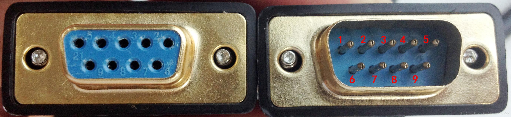
USB口:
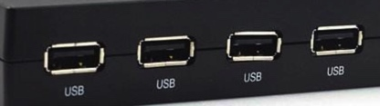
检查你自己电子称是否支持串口。
检查你的电脑是否有串口或者USB口。
如果你的电子称接口跟电脑接口不对应，如：电子称是串口，电脑只有USB口，那你需要购买串口转USB口转接线或转接头进行连接。类似下面这种，注意串口是公头还是母头，别搞错了。
串口公头：
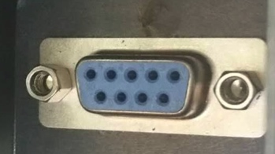
串口母头：
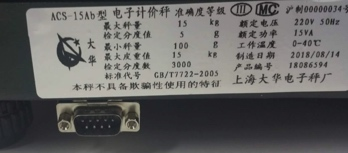
串口转USB转接线：
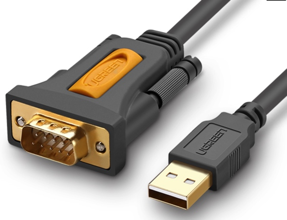
1. 串口电子称连接电脑串口
1.1 串口电子称连接电脑串口
串口电子称 -> 串口线 -> 电脑串口
1.2 查看windows系统给电子分配串口端口
开始 -> 控制面板 -> 设备管理器
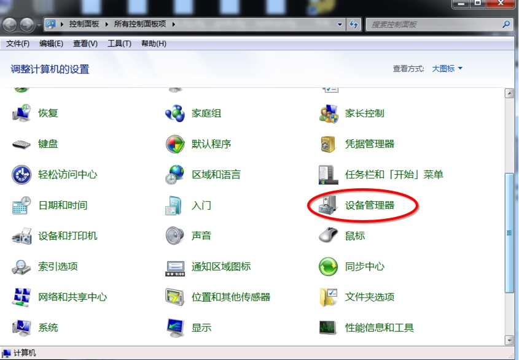
查看”端口(COM和LPT)”， 串口一般分配在COM1, COM2, COM3, COM4, COM5等端口。如果不知道是那个口，可以打开设备管理器同时拨掉连接电脑的串口，等界面自动刷新完，记一下没有插电子称时的有那些串口，等一下再插上电子称串口，对比之前多了那个串口就可以确认电子称在那人串口上了。
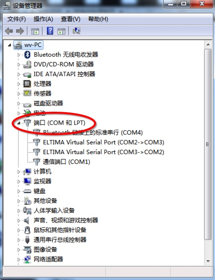
1.3 Windows收银电子称参数设置
有了上面得到的串口端口号就可进行下一步设置了。打了收银界面“设置” -> “设备管理”。
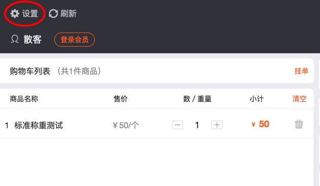
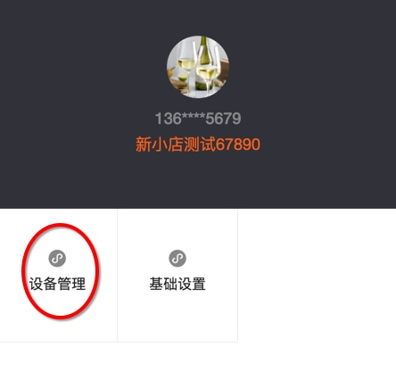
选择电子称品牌，”端口”选择上一步在设备管理里获取到的电子串口端口号，波特率一般是9600，保存。
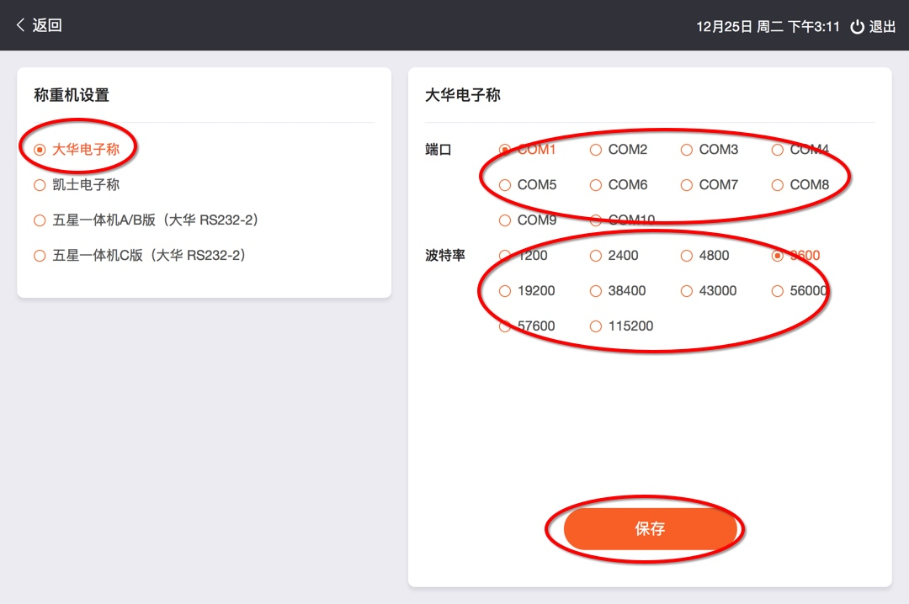
程序会按照设置参数尝试获取电子称读数，这时必在电子上放上东西，看看能不能正常获取到读数。如果正常就可以正常收银了。如果不正常，请切换端口和波特率重试。
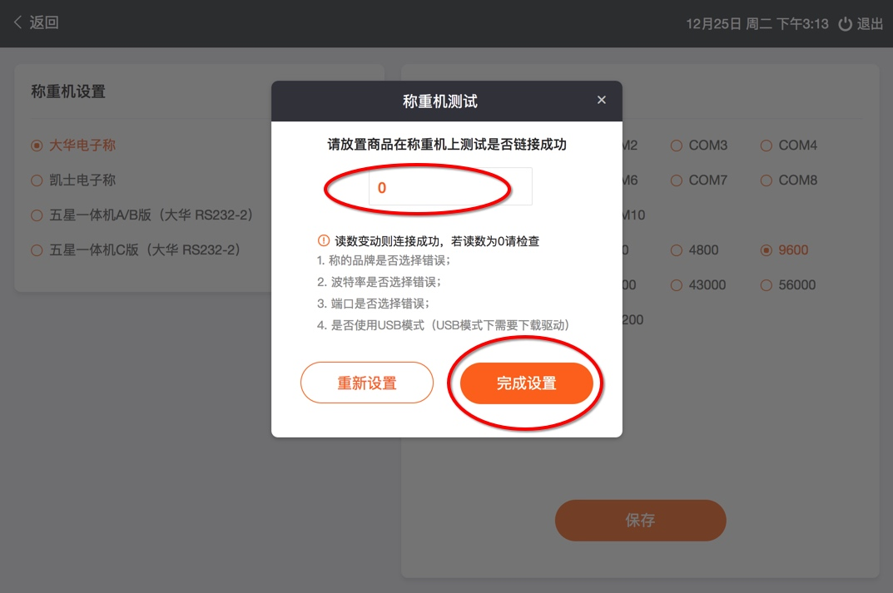
2. 串口电子称连接电脑USB口，
串口电子称 -> 串口转USB线 -> 电脑USB口
如果是大华电子称，你可能需要多买一条公对公的串口线。再连接串口转USB线。如下图：
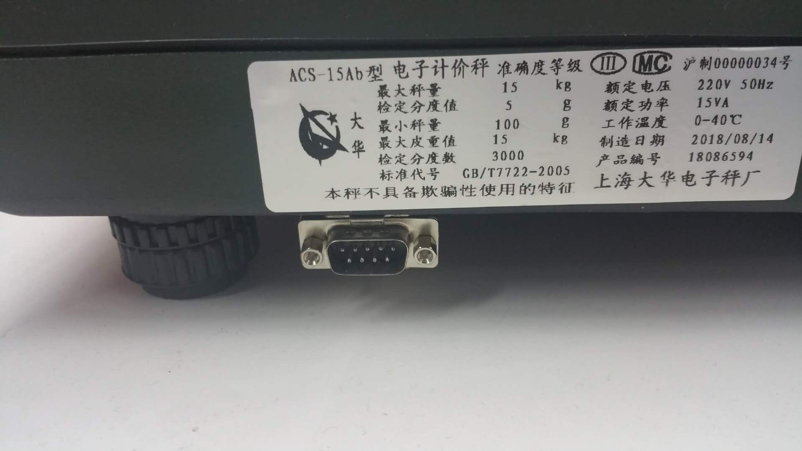
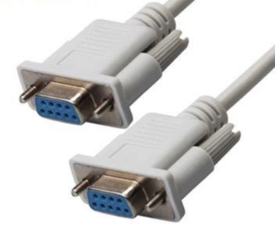
2.1 下载硬件驱动及安装
串口转USB连接的首先要安装USB口驱动程序。打开千米Windows桌面版应用并更新最新版。
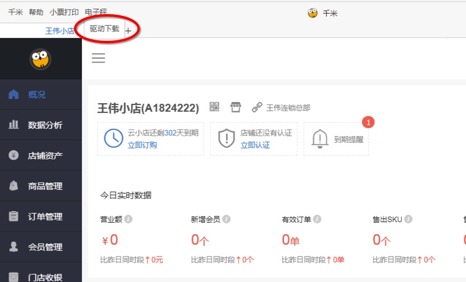
点击”驱动下载”,下载并安装USB驱动程序，
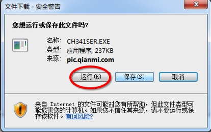
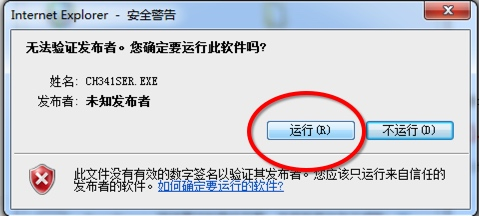
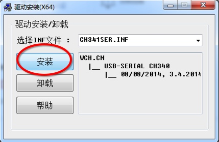
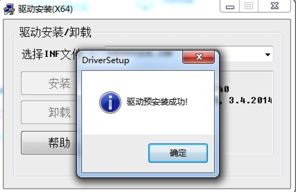
驱动安装好后，拨掉连接电子称的USB线，重启Windows电脑。
2.2 获取电子称在Windows电脑上分配的端口号
再依次打开： 开始 -> 控制面板 -> 设备管理器。
查看”端口(COM和LPT)”，等一下插上连接电子称的USB线，等待驱动安装结束，观察这里的变化。
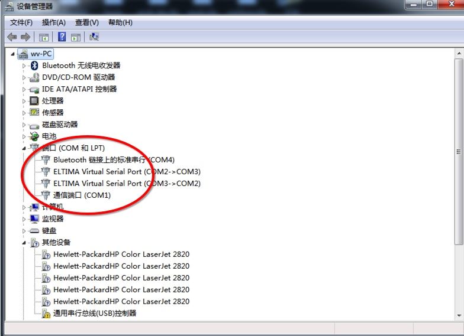
发现我的电脑上多了一个COM5口的设置，记住这个端口，后面设置会用到。注意这你的电脑上可能不是COM5端口，后面配置根据你电脑上的端口配置。
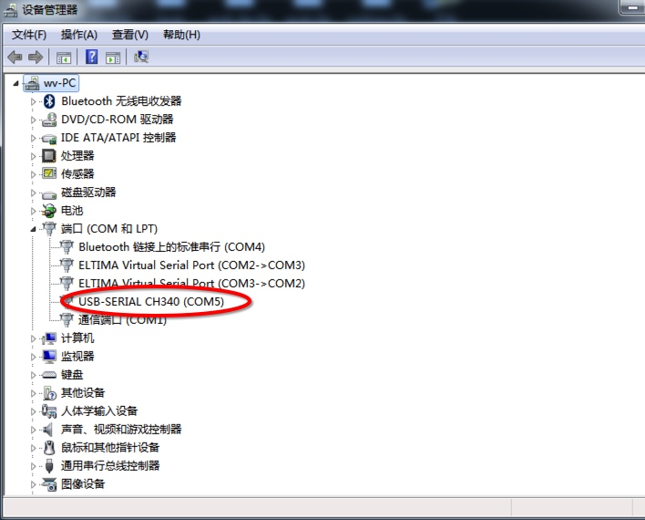
2.3 Windows收银电子称参数设置
打了收银界面“设置” -> “设备管理”。
选择电子称品牌，”端口”选择上一步在设备管理里获取到的电子串口端口号，波特率一般是9600，保存。
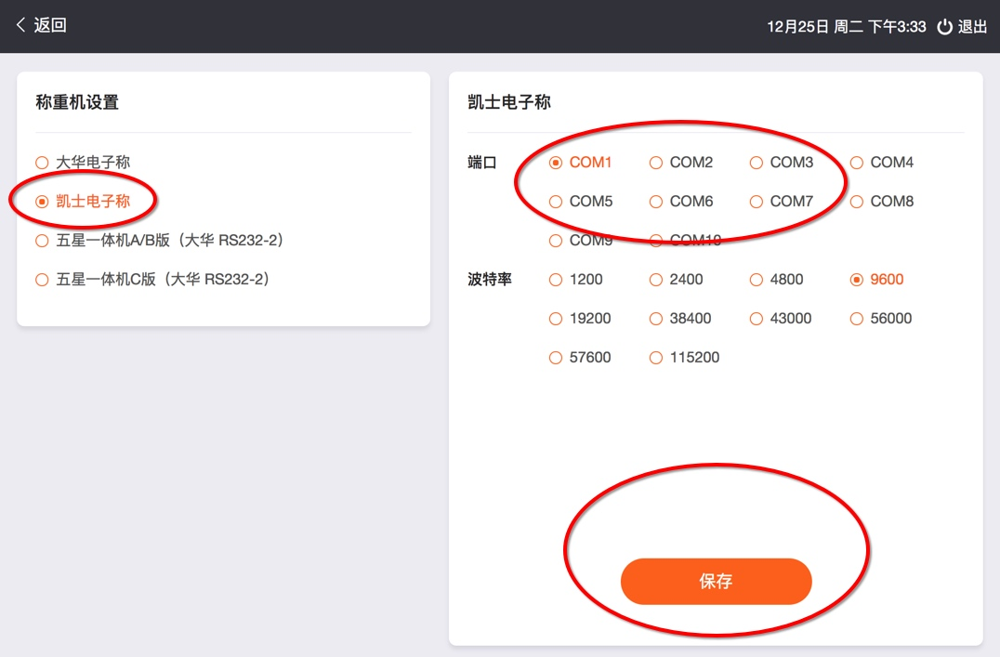
程序会按照设置参数尝试获取电子称读数，这时必在电子上放上东西，看看能不能正常获取到读数。如果正常就可以正常收银了。如果不正常，请切换端口和波特率重试。


微信授权返回“scope参数错误或者没有scop权限”
- 全部
- 标签
- 友链
- 我